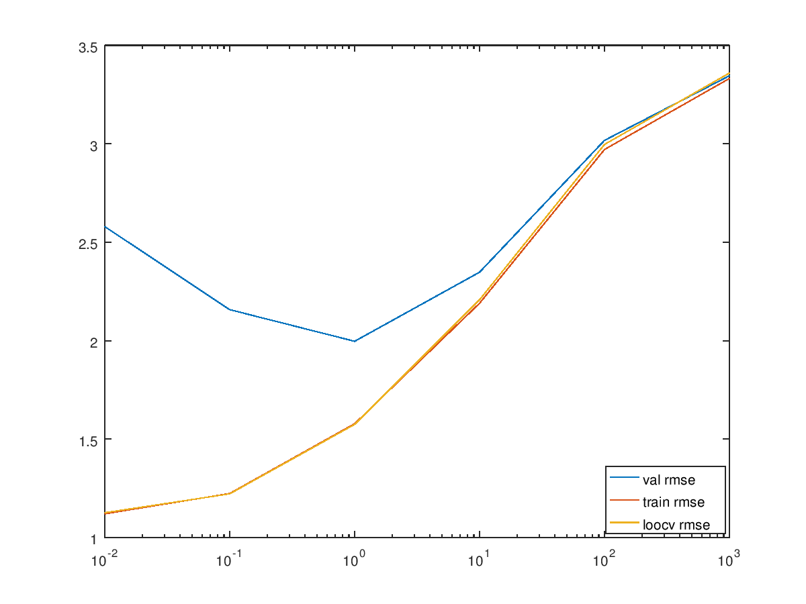

ML_homework_two
D = csvread("trainData.csv",0,1);
trLb = csvread("trainLabels.csv",0,1);
testData = csvread("testData.csv",0,1);
valData = csvread("valData.csv",0,1);
valLabels = csvread("valLabels.csv",0,1);
X = D';
y = trLb;
function [w, b, obj, cvErrors] = train_rr(X, y, lambda)
[m, d] = size(X);
X_bar = [X; ones(1, d)];
Z = zeros(m,1);
I = [eye(m), Z; Z', 0];
C = X_bar * X_bar' +lambda*I;
d = X_bar*y;
w_bar = inv(C)*d;
cvErrors = [];
[s_w_r, s_w_c] = size(w_bar);
w = w_bar(1:s_w_r-1,:);
b = w_bar(s_w_r,1);
C_inv = inv(C);
for i=1:m
numer = w_bar'*X_bar(:,i) - y(i)(1,1);
denom = 1 - X_bar(:,i)' * C_inv * X_bar(:,1);
cvErrors = [cvErrors numer/denom];
end
obj = (lambda * w' * w)(1,1);
for i=1:m
obj = obj + ((w' * X(:, i) + b(1,1) - y(i))(1,1))^2;
end
end
[w, b, obj, cvErrors] = train_rr(X,y,0.01);
size(w);
valData = valData';
valSize = size(valData);
val_n = valSize(1,2);
trainData = D';
trainSize = size(trainData);
train_n = trainSize(1,2);
x_axis = [0.01,0.1,1,10,100,1000];
train_rmse = [];
val_rmse = [];
cv_errors_rmse_list = [];
for j=1:numel(x_axis)
[w, b, obj, cvErrors] = train_rr(X,y,x_axis(j));
rmse = 0;
for i=1:val_n
pred = w' * valData(:,i) + b(1,1);
rmse = rmse + (pred - valLabels(i))^2;
end
rmse = rmse/val_n;
rmse = sqrt(rmse);
val_rmse = [val_rmse rmse];
rmse = 0;
for i=1:train_n
pred = w' * trainData(:,i) + b(1,1);
rmse = rmse + (pred - trLb(i))^2;
end
rmse = rmse/train_n;
rmse = sqrt(rmse);
train_rmse = [train_rmse rmse];
rmse = 0;
for i=1:numel(cvErrors)
rmse = rmse + cvErrors(i)^2;
end
rmse = rmse/numel(cvErrors);
rmse = sqrt(rmse);
cv_errors_rmse_list = [cv_errors_rmse_list rmse];
end
p1 = semilogx(x_axis, val_rmse);
hold on;
p2 = semilogx(x_axis, train_rmse);
hold on;
p3 = semilogx(x_axis, cv_errors_rmse_list);
l = legend('val rmse', 'train rmse', 'loocv rmse');
set(l, 'Location', 'southeast');
best_lambda = x_axis(find(val_rmse == min(val_rmse)));
disp("The value of the best lambda is: "), disp(best_lambda);
[w, b, obj, cvErrors] = train_rr(X,y,best_lambda);
disp("The value of the objetive function is: "), disp(obj)
sum_sq_err = 0;
[X_m, X_d] = size(X);
for i=1:X_m
size((w' * X(:, i) + b(1,1) - y(i))(1,1));
sum_sq_err = sum_sq_err + ((w' * X(:, i) + b(1,1) - y(i))(1,1))^2;
end
disp("The value of the sum of square errors on training data is: "), disp(sum_sq_err);
disp("The value of the regularization term is: "), disp(best_lambda*(w'*w));
sorted_w = sort(w);
input_file = fopen('featureTypes.txt');
number_of_lines = fskipl(input_file, Inf);
frewind(input_file);
cells = cell(number_of_lines, 1);
for i = 1:number_of_lines
cells{i} = fscanf(input_file, '%s', 1);
end
disp("The top 10 most important features are:");
w_len = size(sorted_w);
w_len = w_len(1);
for i=w_len-9:w_len
disp(cells{find(w==sorted_w(i))});
end
disp("The top 10 least important features are:");
for i=1:10
disp(cells{find(w==sorted_w(i))});
end
disp("The weights do make sense intuitively. The features with higher weights are more important than the features with lower weights. The features with the maximum 10 weights are the most important, while those with the minimum 10 weights are the least important.")
predictions = w'*testData' + b;
id = 0:4999;
csvwrite('predTestLabels.csv', [id;predictions]');
disp("The RMSE comes out to be 1.99726 on Kaggle.")The value of the best lambda is:
1
The value of the objetive function is:
1.2187e+04
The value of the sum of square errors on training data is:
7436.8
The value of the regularization term is:
4750.0
The top 10 most important features are:
fruit
cabernet
scour
cherry
charming
blend
majority
holds
sort
vintage
The top 10 least important features are:
acidity
blended
finish
rough
like
oak
chocolate
stylish
apricot
ripe
The weights do make sense intuitively. The features with higher weights are more important than the features with lower weights. The features with the maximum 10 weights are the most important, while those with the minimum 10 weights are the least important.
The RMSE comes out to be 1.99726 on Kaggle.
